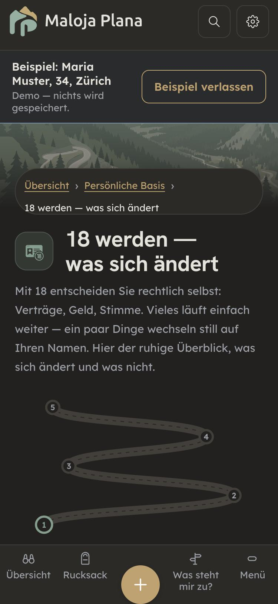

Durchgang 09.11.2026 auf dem Stand der Zweige #770/#771, Beispiel-Modus, Handy-Breite 375 px. Neun Seiten: Kapitelseite, 18 werden, Digitale Ordnung, Heirat, Kind, Adoption, Trennung, Todesfall, EO-Rechner. Je Seite gemessen (Breite, Schrift, Tippflächen, Überschriften, Feldnamen), dazu Fachprüfung und Textprüfung. Gebaut ist nichts.
Gut: keine Seite zu breit, kein Feld ohne Namen, keine Schrift unter 13 px mehr (ausser einem Zeichen, siehe unten). Der EO-Rechner rechnet richtig. Der Ton ist ruhig; der Einstieg bei Trennung und Todesfall («ohne Druck», «nicht allein tragen») gelingt.

aria-current). Regel: nichts doppelt zeigen, was einen Fingerbreit darunter schon steht.button, input, select, textarea { font-family: inherit }) und ein Test, der es bewacht. Wirkt auf die ganze App.Was dasteht, stimmt fast überall. Die Risiken liegen in fehlenden Voraussetzungen: Wer sich darauf verlässt, rechnet sich einen Anspruch aus, den es nicht gibt. Geprüft vom swiss-precision-pruefer gegen den Gesetzeswortlaut, ohne Netz; vor dem Bau liest der rechts-pruefer jeden neuen Satz am Volltext.
| # | Seite | Was fehlt oder ungenau ist | Beleg |
|---|---|---|---|
| F1 | Kind | Mutterschafts-Entschädigung: die dritte Bedingung fehlt — am Tag der Geburt angestellt, selbständig oder arbeitslos mit Taggeld. | EOG Art. 16b Abs. 1 Bst. c |
| F2 | EO-Rechner | «Voraussetzung: mind. 5 Monate erwerbstätig» — es fehlen die 9 Monate AHV-Versicherung und die Bedingung am Tag der Geburt. Bei der Vaterschaft fehlen die Bedingungen ganz. | EOG Art. 16b, 16i |
| F3 | Trennung | Bevorschussung und Inkassohilfe setzen ein Urteil oder einen behördlich genehmigten Unterhaltsvertrag voraus, nicht eine formlose Abmachung. Zuständig ist je nach Kanton nicht die Gemeinde. | ZGB Art. 290, 293 Abs. 2; InkHV |
| F4 | Todesfall | Die Frist von 3 Monaten stimmt. Es fehlt die Falle davor: Wer sich in den Nachlass einmischt (Konto leeren, Schulden aus dem Nachlass zahlen), verliert das Recht auszuschlagen. | ZGB Art. 571 Abs. 2 |
| F5–F9 | Trennung, Heirat, 18, Kind, Digitale Ordnung | Kleiner: bei Kindern entscheidet das Gericht, nicht die KESB · gemeinsamer Name = Ledigname einer Person · «keine Franchise für Kinder» → keine ordentliche · zwei falsche Artikelnummern (KVG Art. 5 statt 3, DSG Art. 25 statt 26). | ZGB 160, 176, 279 · KVG 5, 64 · DSG 25 |
| # | Befund | Empfehlung |
|---|---|---|
| T1 | In der Du-Fassung wechseln «du» und «ihr» auf derselben Seite (Todesfall: «du musst», dann «Fragt, lasst euch»). Dasselbe bei Heirat und Trennung, auch in fr/it/rm. | Durchgehend du (Singular): vor der App sitzt eine Person. |
| T2 | Italienisch: Bei Heirat und Trennung sind Sie- und Du-Fassung wörtlich gleich, und zwar in der Mehrzahl («Potete»). | Sie-Fassung mit «Lei», Du-Fassung mit «tu». |
| T3 | «18 werden»: Gesetzesangaben mitten im Satz («ZGB Art. 19 Abs. 1 und 2») und unerklärte Kürzel (KKG, KVV, StHG, BPR, MG). Für 18-Jährige schwer. | Je Schritt Alltagssprache; Artikel in die Quellen-Zeile. |
| T4 | Generisches Maskulin: «für Schweizer: der Dienst», «eingetragene Partner», «Vermieter», fr «un médecin», it «cittadini stranieri». | «für Schweizer Männer: die Stellungspflicht», «Personen in eingetragener Partnerschaft», «Vermieterin oder Vermieter» usw. |
| T5 | Feld Pronomen: «they (neutral)» steht auf Englisch, «sie» klein ist nicht von «Sie» zu unterscheiden. | «sie / ihr», «er / sein», «keine Pronomen (nur Vorname)», «Keine Angabe». |
| T6 | BACS, EDÖB, Eheschutzverfahren, Alimentenbevorschussung stehen ohne Erklärung. | Beim ersten Vorkommen ein kurzer Klammersatz. |
| — | Rätoromanisch: «18 werden», «Adoption», «Digitale Ordnung» stehen noch auf Deutsch. | Nicht Teil dieses Durchgangs: Rumantsch ist bewusst vertagt (Entscheid 21.09.). |
Quellen-Links bei Digitale Ordnung und EO sind 17–19 px hoch (in Listen, nicht im Satz) → auf 44 px Tippfläche bringen · Post-Link führt auf die englische Seite · Feld Zivilstand «Konkubinat» ist kein amtlicher Zivilstand → in Briefen nicht so ausgeben · das kleine ⓘ bei «IPV» in der Fusszeile hat 9 px.
Alles wie empfohlen, in zwei Zweigen: Gestaltung (A, B, C, Kleinkram) und Inhalt (F1–F9, T1–T6 in allen vier Sprachen ausser Rumantsch, jeder neue Fachsatz durch den rechts-pruefer am Volltext, bevor er als fertig gilt).